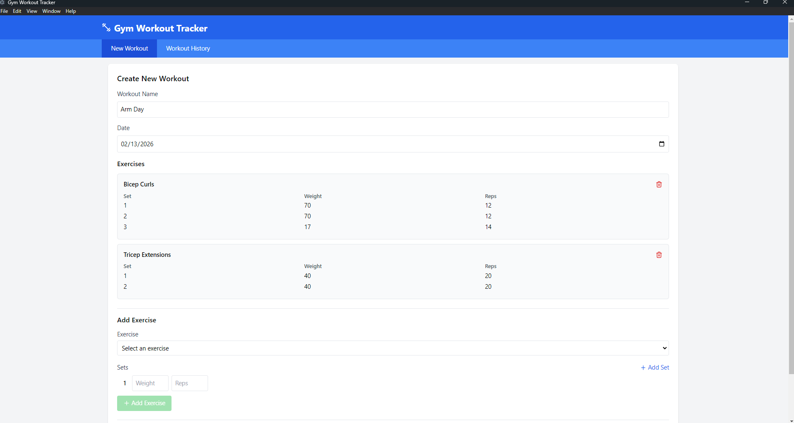

Projects
Here are some of the projects I've worked on that showcase my technical skills and interests in AI, software development, and computational biology.
Ultimate Tic-Tac-Toe
Engineered an interactive game featuring intelligent computer opponents
powered by the Minimax algorithm. Implemented multiple difficulty levels
to provide challenging strategic gameplay for users of all skill levels.
Tech Stack: Python

Workout Tracker Application
Designed and built a cross-platform desktop app that helps users log
exercises and visualize progress over time. Features an intuitive interface
for tracking sets, reps, and weights across workout sessions.
Tech Stack: Electron, JavaScript

Home Media Server
Architected a personal streaming solution by repurposing hardware and
deploying Jellyfin on Ubuntu Linux. Successfully configured multi-user
access for seamless media delivery across devices.
Tech Stack: Ubuntu Linux, Jellyfin
Bioinformatics Research
Conducted independent research investigating computational approaches
to biological data analysis. Explored applications of AI and machine
learning in genomic sequencing and protein structure prediction.
Focus Areas: Computational Biology, Machine Learning